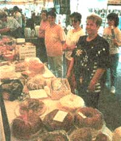

MUSIC OF THE COUNTRY
At the center of this makeshift stage, Peter Temple belts out the mournful lyrics in his reedy tenor, a small-town Roy Acuff in the midst of his own Grand Ol’ Opry. He wears cowboy boots, khaki pants, faded work shirt, and the puckish expression of a country doctor who has seen just about everything. He picks his trademark lead on an old Martin guitar so worn and battered that the pick guard fell of years ago. He says it sounds better that ways.
If my childhood had a musical accompaniment, it came from the porch of Dr. Peter Temple. Every Wednesday night for the past 25 years, local legends and aspiring kids have gathered at his house in Tarboro, North Carolina, to pay homage to music as rooted to the Edgecombe County soil as the pines. Farmers and foresters, mechanics and cabinetmakers, retirees and college students, and all five of Peter's children have graced that stage. The faces change, the instruments come and go, but the music remains the same.
I am an alumnus of that porch, a graduate of the Peter Temple school of bluegrass pickers. Like dozens of kids that wove in and out of that sphere, I started at the far end of the porch, playing softly to hide my mistakes, while studying Peter's chord changes intently. As I improved, I graduated to the outer circle and finally to an equal spot on the swing or a chair where I could pick a lead or sing harmony on a verse. Even though I earned my place on the porch more than a decade ago, my heart still jumps when Peter yells, "Pick us one, Joel," and for a fleeting second I am that shy adolescent trying to piece together the melody before those stony adult faces marking time with the music.
Tonight an added spark infuses the air. Dennis Coker hammers his five-string banjo as if he were revving an engine at the Chevrolet dealership where he manages the shop. Roger Sauerborn, owner and operator of the Pretty Good Sand Company, stays with him on a teardrop mandolin and sings high harmony. Between songs they join Peter in a discussion of provisions, driving times, the rendezvous. It's the last week in April you see, and tomorrow they will pack up instruments, folding chairs, and enough food to choke an army and make their annual pilgrimage to Wilkesboro, North Carolina, for one of the best acoustic music events in the country: the Merle Watson Memorial Festival.
FRIDAY NIGHT:
The panoply of the festival unfolds and picking a favorite performer is almost impossible.
Tony and Wyatt Rice, the hottest "newgrass" guitar-picking brothers in the country. Emmylou Harris has closed every Watson festival so far, and J.D. Crowe, who pushed bluegrass to new levels of innovation 1970's.
The Watson Festival is a thriving remnant of the folk renaissance of the 1960s, when shows from Newport, Rhode Island, to Berkeley, California, helped millions of Americans rediscover their musical roots. On one of these stages, at the 1963 Newport Folk Festival, a 41-year-old blind guitar player from the North Carolina mountains sat down and began to play. He had wavy, dark hair then, a gentle laugh, and a rich, warm baritone that enveloped his audience like a grandfather's hug. He sang songs about lost lives and lost loves, murderers and muskrats, shady groves and blackberry blossoms, bringing the sounds of Appalachia to the North. The performance catapulted Arthel "Doc" Watson to the forefront of the folk revival where he has remained ever since.
The very next year he was joined onstage by his 15-year-old son, Merle. Doc's wife, Rosa Lee, had taught her growing boy his first chords just three months earlier while Doc was on tour, yet he backed up his father for the entire set. For the next two decades they became opposite sides of the same coin: Doc, the frontman, warming the crowd, doing all the vocals; Merle, quiet and bearded, letting his guitar sing harmony for him. Together they made 20 albums and won four Grammys.
As he grew older, Merle's talent blossomed. His flat-picking rivaled the lightning-quick licks of his father, widely recognized as one of the best acoustic guitarists in the land. He learned to fingerpick from legendary bluesmen like Mississippi John Hurt, adding a new dimension to their sets. But it was when Merle slid a bottleneck slide on his finger that the world seemed to stop in its tracks to listen. "Merle played some of the finest slide guitar I've heard in my life," Watson said in a recent interview. "I've never heard anybody that could put the sweetness and true-ness of note with the slide bar the way he did. He was just coming into his own when he had to leave us."
In the first dark hours of October 23, 1985, just days before Frets Magazine named him the best finger-picking guitarist of the year in folk, blues, or country music, Eddy Merle Watson rolled his farm tractor on a steep hillside near his home, ending the life of one of the world's great musicians in a tragedy worthy of the blues ballads he loved.
After ten years, the pain still resonates in Doc Watson's voice. "I didn't just lose a good son," he says. "I lost the best friend I'll ever have in this world."
A year after Merle's death, Bill Young, Watson's close friend and picking buddy, and B. Townes, director of development at Wilkes Community College (WCC), approached him with the idea of putting on a benefit concert at the college to raise money for a memorial garden in honor of Merle. Rosa Lee and Watson's daughter Nancy suggested they invite a number of Merle's friends to play as well-some of the country's best acoustic musicians. When the first Merle Watson Memorial Festival opened in the spring of 1987, artists played on the back of two flatbed trucks to a crowd of 4,000 people. The event has grown to include 80 artists and bands performing on nine stages for nearly 30,000 people, raising as much as $25,000 annually for the Garden Fund and providing a $1.1 million boost to the Wilkes County economy each year.
Watson, who hosts the four-day festival and performs on numerous occasions, is touched by the outpouring of support from the community and the artists, most of whom volunteer their time or receive a nominal fee. "It's a very gratifying thing to me and the family," Doc says. "For something that big to be done in memory of our son, it's a wonderful, wonderful thing."
When I arrived on Thursday afternoon, I found Peter and crew by ear in a campus parking lot that had been turned into an RV campground. They were picking "Blue Ridge Mountain Blues" and the sound resonated off the aluminum sides of Dennis's camper, giving it a bright, metallic tint.
Despite the cowboy boots, banjo belt buckle and rattlesnake-skin hatband, Peter doesn't fit the mold of the bluegrass guru. The son of a career Royal Navy man, he was born in South Africa in 1937 and spent most of his childhood in England. His family eventually moved to Charlotte, North Carolina, a burgeoning metropolis a few hours away from the Appalachians. He first heard "hillbilly music" on the Juniper Junction radio show and he liked it so much he went out and bought a 45 of Flatt and Scruggs's "Flint Hill Special."
He played guitar in a rock and roll band in college, and later picked country music with friends in medical school in Georgia. But it wasn't until he was practicing medicine in Tarboro that he made his first bluegrass connections while mending a boy's broken arm.
"I was in the emergency room one night when Terry Coker came in," Peter recalls. "He'd fallen off a horse and busted his arm. While I was setting it, his mother and I began talking about music. She said that folks gathered at her house every Sunday to sing gospel tunes and invited me over." There he met Joe Pierce, a fiddler, his brother Allan, a tenor and solid rhythm guitar player, and Clarence Abbott, a mandolin player. Together they formed the first Tar River Boys and became regulars on the local pig-pickin’
circuit for the next 20 years.
As cool dusk falls we wander down to the main stage for the evening lineup which includes the Nashville Bluegrass Band and Alison Krauss and Union Station, two of the hottest bluegrass groups performing today. The 21-year-old Krauss, from Champaign, Illinois, cut her first album at 14 and won her first Grammy at 18 for her 1991 single "I've Got That Old Feeling." She sings sad, weeping, leaving songs in a voice that cleaves the night air like a diamond-cutter's chisel.
Part of the appeal of this music is the utter lack of pretension of its stars. Doc Watson looks and acts like a favorite uncle. Alison Krauss, in a cotton-print dress and mass of dark curls, is literally the girl next door-somebody's little sister who sings in the church choir and plays a mean violin. The rest of the band members, in jeans and dress shirts, wouldn't draw stares at the grocery store. They smile and laugh and seem to have as much fun as the audience.
Watson, who has won two more Grammys since Merle's death, especially eschews the star treatment. "I never had the idea 'Hey, look who I am' and Merle didn't either, bless his heart," Watson says. "When we were up on stage, we were just people and glad that folks enjoyed it. It made us feel embarrassed if people wanted to put us on pedestals."
When the last strains of Krauss's encore "Atlanta" fade into the night, we head back to the trailer to pick. We work through a few numbers under the stars and soon a guy from Cincinnati walks over with a stand-up bass and falls right in, plunking a solid lead on the old instrumental "Grandfather's Clock." Dennis cranks off "Remington Ride," a blistering banjo tune, and before he's finished, sweat rolls from his brow despite the cool evening air. Two more guitarists walk up and a small audience gathers. A young couple begins a slow shuffle in the gravel and keep it up until 2 A.M.
Unlike other concerts, bluegrass festivals foment participation. Anyone who knows three chords on an instrument usually brings it and after the adrenaline rush of watching Doc Watson or Tony Rice burn the fret board, the amateurs convene on tailgates and camp stools to give it their best shot. Most bluegrass songs have only three or four chords and words of the standards are as well known as the Pledge of Allegiance. Peter once attended a party in Oklahoma City in which the guests included members of the Oklahoma Symphony as well as the Country Gazette, an influential bluegrass band of the 1970s. Before long, Peter and Alan Mundy, the great banjo player for the Gazette, brought out their instruments and began to pick. A flutist drifted by and remarked at how well they played together without ever having seen each other before. Mundy replied: "Well ma'am, bluegrass is the international language of music."
On Friday the great panoply of the festival unfolds. For the hardcore fan it's like trying to pick one chocolate from a Whitman's Sampler. Between one and three o'clock, for example, one had the following options: Shady Grove, a hot young band from Chapel Hill, NC, on the main stage; Front Range, another up-and-coming quartet from Colorado, at the Burger King Little Pickers' tent; legendary fiddle player Mike Seeger under the traditional music tent; veteran songwriter Pat Alger at the songwriting tent; folk-music specialists Bob and Dana Kogut under the Hillside tent, Dobro virtuoso Jerry Douglas at the creekside workshop; and Doc Watson and long-time sideman Jack Lawrence picking on the Homespun Learning Stage in WCC's Thompson Hall.
The Tony Rice Unit was the headliner of the afternoon. Rice lept to fame in the mid-70s as a talented young guitar player for J.D. Crowe and the New South, one of the most influential and innovative blue-grass bands of that decade, and later with the David Grisman Quintet, whose fusion of traditional and jazz styles took acoustic music to new heights. In the 14 years since he's been on his own, Rice has become the Eric Clapton of the acoustic guitar, pushing the boundaries of bluegrass and acoustic jazz with his blazing flat picking riffs and intricate rhythms.
The jazz influence is apparent as he walks on stage in a double-breasted Italian suit and silk tie, his dark hair swept into a ponytail. But when he breaks into "Tell Me Girl, Why You've Been Gone So Long," in his velvet tenor, the crowd, in shorts and T-shirts, sees right through him. He is one of them. The bell-like clarity of his famous Martin D-28, once owned by his mentor, the late Clarence White of the Kentucky Colonels and the Byrds, speaks to them with its ringing voice. When he's done, the applause rips the afternoon air.
That evening Doc Watson takes the stage with an assortment of all-star guests, including Jerry Douglas, fiddle great Mark O'Connor, bassist T. Michael Coleman, Jack Lawrence, and others. At one point Doc welcomes bluesmen John Cephas and Phil Wiggins onstage and runs through a couple of powerful blues numbers. They close the set with "Let It Roll," with John Cephas belting out the lyrics in his bluesy tenor, Wiggins wailing on the harmonica, and Jerry Douglas making his Dobro whine. Watson sits in the center, smiling his warm smile, filling in the gaps with frills and runs, the maestro of quintessential American music.
The broad range of musical styles and talents at the Watson Festival reflect Watson's influence among younger musicians as well as his own eclectic repertoire. At any given Doc Watson concert, one is liable to hear bluegrass standards followed by flat-picked fiddle tunes, old-time gospel, powerhouse Delta blues, Texas swing a la Bob Wills, 50s-ish Merle Travis tunes, or moody instrumentals. On a hot night in a small, rickety bar called the Cat's Cradle, in Chapel Hill, NC, I even watched him crank out Elvis's "Blue Suede Shoes" and nearly bring the house down. Yet for years he used to come out for his final encore with just a harmonica and sing "Dixie" a cappella to equally thundering applause.
That same eclecticism raised its head later that evening when the Seldom Scene stormed the main stage. The veteran Washington, DC, group has been on the forefront of bluegrass innovation for the last 20 years, recording everything from gospel tunes to Rolling Stones covers. In the middle of their set, group founders John Duffy, Ben Eldridge, and Mike Auldridge turned the stage over to their new guitar player Moonie Williams, whom Duffy, a perennial cutup, claimed they found sweeping the steps of the Metropolitan Opera. Williams, who was probably still in grade school when the Scene cut their first album, introduced his operatic aria with a flurry of Italian that he translated roughly into "My Little Blue-Eyed Gal." As his pure, wavering voice pierced the night with its song of lost love in a distant land, I heard the man next to me gasp in pure delight.
Yet on the heels of the aria the band sings "Working on a Building," an old-time gospel tune, and before the night is through they work the crowd with their punk-grass rendition of Eric Clapton's "Lay Down Sally."
What makes this music, with its roots sunk deep in the green Isles of Ireland, Scotland, and the continent of Africa, thrill the hearts and ears of grandmothers and Grateful Dead fans alike? "It's toe-tapping music, simple and accessible," says Lou Rowan, brother of renowned singer/song-writer Peter Rowan. "It hits your heart. And it's honest music, very unadorned." Rowan and his brothers Peter and Chris explore the reaches of three-part harmony on their new album "Tree on a Hill," their first release as a trio in 20 years. "Bluegrass songs have little peaks and valleys in them," Rowan adds. "When the harmony hits, it just resonates."
Charles Pettee, the mandolinist for Shady Grove, agrees. "It's something real. It transcends time and place. It's not a marketing ploy or commercial BS."
The next day while waiting for Kukuruza, the first and perhaps only Russian bluegrass band, I spied a Japanese tourist snapping away with his Nikon. Hideo Namiki, a mild-mannered marketing specialist from Tokyo, saw J.D. Crowe and the New South in Japan in the mid-1970s and has been a bluegrass addict ever since. He even chose to go to graduate school in Washington, DC, just so he could hear the Seldom Scene play their Weekly gig at the Birchmere in nearby Alexandria, VA. So it was not surprising that Namiki would plan his annual vacation around the Watson Festival.
Although the Merle Watson Memorial Festival is one of the best-organized events of its kind, it can overwhelm the first-timer. These tips may smooth the bumps and help keep your toes tapping and the blues onstage.
• Make Reservations Early.
The closest hotels and motels in Wilkesboro are often reserved months or even years in advance. Fortunately there are a number of lodgings within a 40-mile radius if you don't mind the drive.
The festival will be happy to send you an information packet with a complete list of hotels, motels, and bed and breakfast inns in the vicinity. Just call the Festival Hotline at 1-800-343-7857.
• Camp If You Can.
Not only will you save on lodging and food, but you'll hear some great parking- lot picking absolutely free. Wilkes Community College converts two lots on campus for RV owners who purchase three-and four-day tickets (no water or electric hookups are available). These areas are within walking distance of the festival grounds and are also served by shuttle buses. As a result, they are in high demand and advanced reservations are required (910-651-8691 ext. 92). The festival also operates a tent campground at the old Wilkes County Airport, about a mile from the festival, with cold showers and port-a-johns. It is also serviced by shuttles. Reservations are recommended (910-667-6883). The U.S. Army Corps of Engineers has three campgrounds at the Kerr Scott Reservoir a few miles from town. The Bandits Roost and Warrior Creek campgrounds are served by shuttles, offer electric and water hookups ($12 per night), tent sites ($8 per night) and bathhouses with hot showers. The Marley's Ford campground has only primitive sites and no bathhouse or shuttle, but camping is free. For more information, call the Corps at (910 921-3390). Call the Festival at the number below for a full list of accommodations.
• The Lawn Chair Dash.
There are no stadium seats here; so if you want something to sit on you have to bring it. One of the unheralded events of the festival is the 200-yard lawn-chair dash that occurs every morning when the gates open at 7 a.m. Hardcore fans usually arrive at six or earlier for the post positions and competition for the front row is friendly but fierce. The pros, particularly seasoned followers of the Grateful Dead, eschew clumsy lawn chairs for large plastic tarpaulins, which they stake down, claiming 60- or 70-square feet of space. Thanks to the superb sound system, one can also arrive leisurely, set up a tent or canopy on the perimeter, and hear a great show. All chairs and blankets must be removed each evening.
• Get High on Bluegrass
Unlike other large festivals in the state, which were closed down because of illicit activity, the Watson Festival remains strictly a family affair. No alcohol, drugs, or glass containers are allowed and coolers are checked at the gate.
• Bring Sun and Rain Gear
Although the 1994 Festival was held in brilliant sunshine, past events have looked more like Noah's sendoff party, so come prepared for both. Straw hats are the de rigueur headgear, the more beat-up the better-and don't forget your sunscreen. The mountain air cools onsiderably at night so, bring a sweater, too.
• Bring Your Twanger
Even if you can barely stumble through "Wildwood Flower," don't leave your instrument at home. The festival features a number of workshops for beginners and advance pickers taught by the best in the business. Where else could you learn a banjo lick from Dr. Banjo Pete Wemick, or a guitar solo from Doc Watson himself? What else are you going to do at 2 A.M. when the rest of the campground is making music?
• It's Only Money
The 1995 prices aren't expected to change much from last year. Tickets for the 1994 festival were $25 per day through the weekend, $20 for Thursday. A four-day pass, however, was $75 ($50 for students aged 13-18 or full-time college students), while a three-day pass was $65 ($40 for students). Children under 13 are admitted free when accompanied by an adult. If you order early you might also receive free tickets to the infamous Midnight Jam on Saturday night, which is as rare as hen's teeth come festival time. For those who'd rather experience the festival vicariously, the 1992 Merle Watson Memorial Festival Video is available for $24.95 plus $4 shipping and features all your favorite artists. Proceeds from the sale of the video go the Garden Fund. For information and credit-card orders, call 1-800343-7857.
• Visit Merie's Garden
The Eddy Merle Watson Memorial Garden, located just outside the festival entrance, is one of the premier gardens for the visually impaired in the country. It features fragrant plants that feel good to the touch and a new 75-foot-long sculptured brick wall with animal and plant carvings that represent letters of the alphabet. Take the time to close your eyes, touch the wall, and remember what the festival is all about.
"My feeling is that traditional and bluegrass music in the United States is similar to traditional Japanese music," Namiki says. "It's very simple music. The harmonies are very beautiful." What is his favorite part of the festival? "The guitar of Tony Rice is amazing," he says worshipingly. "I've never seen such guitar."
As soon as I bid Namiki goodbye, a booming voice rolls across the crowd: "I say there, would you like to interview an Englishman?" I turn to find a tall, John Cleese-looking character in beard and floppy hat striding toward me. John Matterface introduces himself and informs me that it is precisely 3,700 miles from London to Atlanta and an additional 80 miles to his home in Broadstairs, south of London. Matterface, a former sailor in the British merchant marine, heard Doc Watson at a festival in Indiana 20 years ago and was immediately hooked. He, too, came over specifically for the event. "I wasn't even aware of this festival until last year when the video tape was made available in the U.K.," Matterface said. "I was so shocked that all my favorite people were here."
Suddenly Kukuruza takes the stage accompanied by warm applause. Although Russian bluegrass sounds like an oxymoron, these dedicated musicians from the former Soviet Union risked life and limb to listen to smuggled American records in the early 1980s. Their mastery of the music was evident during their first U.S. tour in 1991, when they were invited to appear on the Grand Ol' Opry.
Irina Surina, their sultry, red-haired lead singer, floats through traditional Russian folk ballads, bluegrass standards, and American pop classics with a voice that makes men's knees tremble. After the show, I catch Surina as she signs autographs behind the tent and ask her how she became a Russian bluegrass star. "I graduated from music college in Moscow," she says in broken English. "And I was just trying to find work." Kukuruza (which means "corn" in Russian) was a novelty act, at a local dance hall, in need of a lead singer. The band's success in the States, however, did not ensure success at home. "This music is not real popular in Russia now," Surina says pragmatically. "Just a few people listen to it."
The festival invites participations, so be sure to bring your kids...and your guitar!
I wish her well and turn to go as a small, round man in glasses, mustache, and funny sun hat approaches her.
"I just have one question," he says. "Will you marry me?"
"Of course," Surina replies, mechanically signing his program.
That evening the festival swings from traditional to mainstream country music. Sweethearts of the Rodeo, featuring sisters Janis Gill and Kristine Arnold, begin the evening on the main stage followed by Junior Brown, a long, tall Texan with a voice like Ernest Tubb and one of those creased white cowboy hats that looks like a paper boat. Brown, who plays a combination electric guitar and lap-steel he calls a "guit-steel," energized the crowd with hard-driving rockabilly tunes such as "Free-Born Man" and "I Like To Party."
While roadies set the main stage for Brown, Doc Watson walked out on an adjacent area called the Cabin Stage. He was followed by a heavyset, bearded young man in his late twenties. For a moment I felt a twinge of deja vu, as if Merle had come back to pick one more song. Then Doc introduced his grandson, Merle's son Richard.
Like Merle he was quiet, almost shy on stage. Like Merle, he sat on his grandfather's right hand. Doc, especially, notices the similarities. "We sit here and practice and it's like looking at Richard and thinking, 'Son, you favor Merle' because Richard loved Merle's music and it comes out through his fingers."
But Richard, like Merle had, enormous shoes to fill, and like Merle, he hasn't received the credit Doc thinks he deserves. At a recent charity performance that was being taped by a local public television station, Doc feels the camera crew slighted Richard badly. "Richard was doing 99 percent of the lead work in the set he did with me and they didn't even give him credit with the camera," Doc says. "It burns me up when people do that to my kin."
Richard seems to sense the void into which he steps. He sweats under the hot lights and fiddles nervously with his guitar as technicians work on the sound. But when everything is adjusted and he and Doc hit the first bars of "Milk Cow Blues," Richard finds his medium and goes to work, deftly picking those pained leads with their blend of sadness and joy that his father knew so well. And for a moment the crowd draws quiet and remembers.
"I woke up this morning
Looked out my do'
Thought I heard my milk cow
I can tell the way she lows.
If you see my milk cow won't you please
Drive her on home.
I ain't had no milk and butter
Since my sweet little Jersey cow's been gone."
Back at the trailer, Peter can't stop talking about Junior Brown and his licks on the guit-steel. "Man that guy was incredible," Peter says. "Unbelievable!" Despite a Sunday lineup that includes Ralph Stanley, Emmylou Harris, and a reunion of J.D. Crowe and the New South, the crew plans to leave in the morning. Roger has to pick up a diesel engine in Greensboro and Dennis is anxious to start the long drive home with the camper. I watched Peter pick a few songs with his daughter's friends. They were young, fresh out of college, and seemed to have little experience with the pain embedded in the songs they sung and played so well. It reminded me of something Peter said earlier that afternoon when we took shelter from the hot sun to play a few slow ones in the shade of the awning. We were playing soft and low and the instruments seemed to meld into the rhythm and melodic cadence that were born in these hills, as if something in the air made them sound better. "The whole deal is getting young people interested in it," Peter said. "Get them out there doing something. No one cares what it is. If they just hit a G-chord."
Throughout the festival I'd asked fans what they thought was the universal attraction to this music-what made people from such diverse social, cultural, and generational backgrounds love it so. The answers ranged from harmonic convergence to the good feeling it gives. But I think Doc Watson came the closest.
"I have wondered about that, but I really couldn't put my finger on why they love it. Unless it's the fact that the music for the most part is down to earth," Watson said. "If you think about music, especially the kind of music Merle and I played and the good traditional music of this country, it's the lives of people set to lyrics and sounds. It talks about their joys and sorrows and the in-betweens... .So it expresses the feelings of people and maybe that's what crosses the bridge."
A week later I am sitting on Peter's front porch picking with Roger and Peter and a handful of others. The sound of tuning instruments floats in the warm night breeze, inviting all who care to listen. Then someone yells, "How 'bout Ol' Folks At Home?" and we re off like a race, the instruments and voices blending in the three-part harmony and four-count rhythm that has come to be known as Bluegrass.
|
Ralph Stanley, one of the founding fathers and legends of blue-grass, pickin' at the Tarboro festival. |
|
 |
|
|
|
|